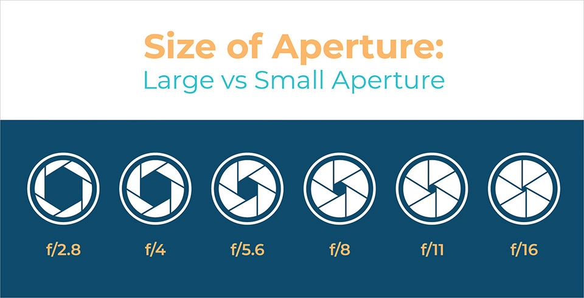

Aperture can be defined as the opening in a lens through which light passes to enter the camera. It is an easy concept to understand if you just think about how your eyes work. As you move between bright and dark environments, the iris in your eyes either expands or shrinks, controlling the size of your pupil. In photography, the “pupil” of your lens is called aperture. You can shrink or enlarge the size of the aperture to allow more or less light to reach your camera sensor. Aperture can add dimension to your photos by controlling depth of field. At one extreme, aperture gives you a blurred background with a beautiful shallow focus effect. At the other, it will give you sharp photos from the nearby foreground to the distant horizon. On top of that, it also alters the exposure of your images by making them brighter or darker.
